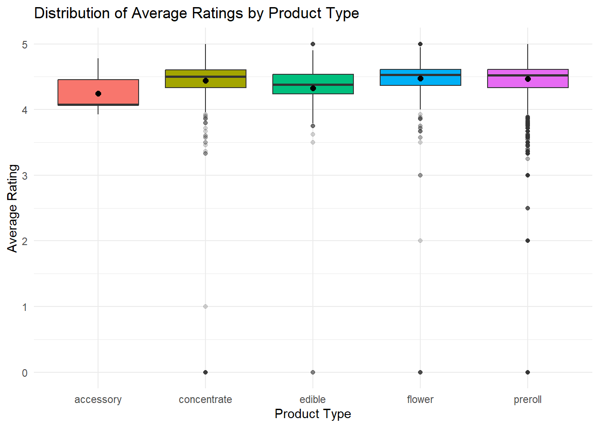
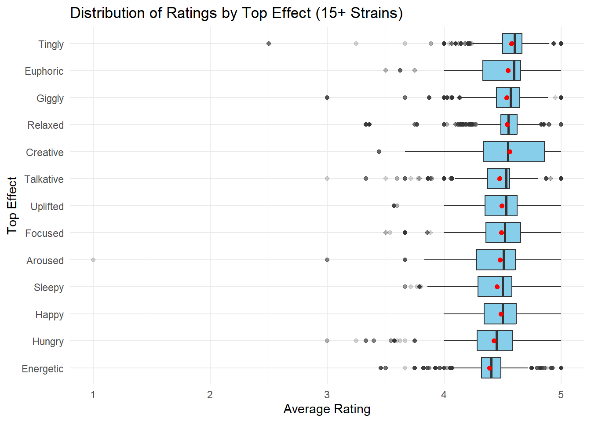
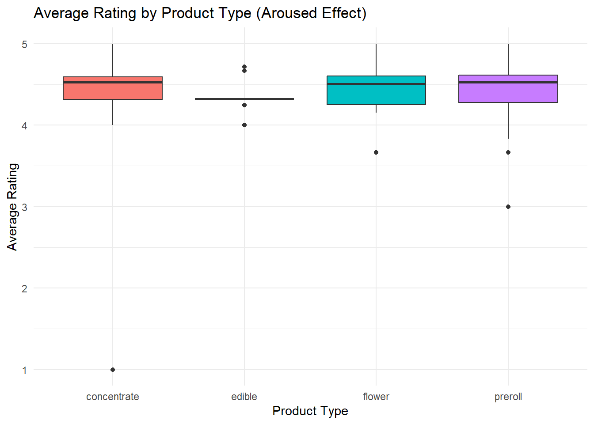
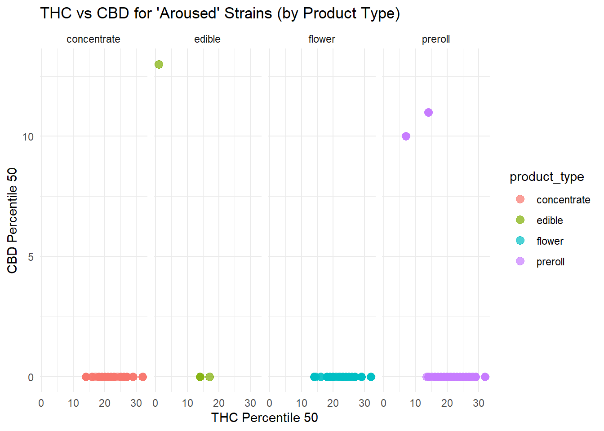
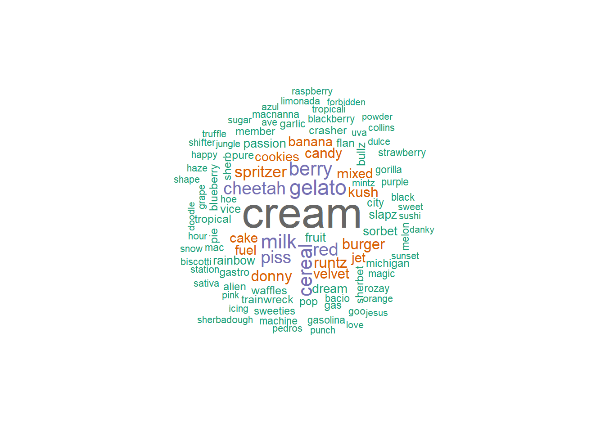
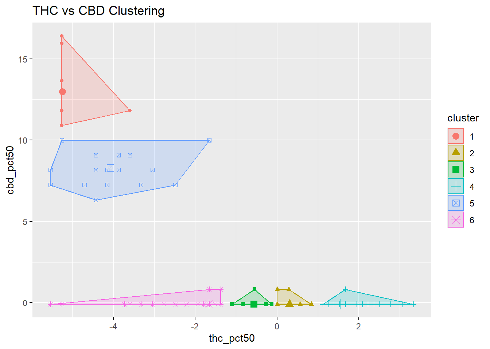
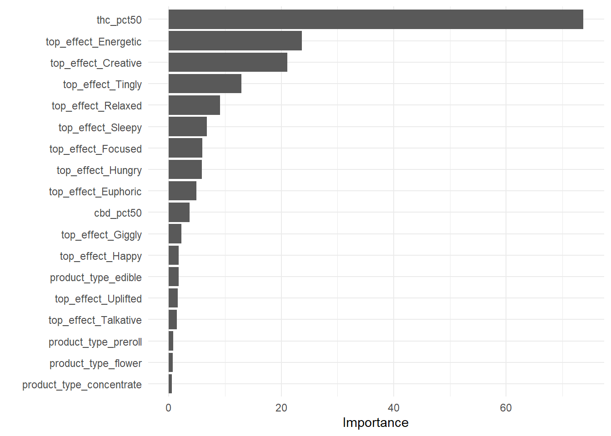

Gathering Strain Data from Leafly
What consumer strain databases reveal — and obscure — about cannabis chemistry and perceived quality
Leafly
Strains
Cannabinoids
Ratings
Using several thousand strain records from Leafly, this analysis examines how THC and CBD percentile measures, product form, and labeled effects relate to consumer ratings. Results show that potency dominates perceived quality, while strain names and effect labels explain relatively little variation — highlighting the limits of consumer-facing strain taxonomies for market analysis and policy design.
The Bottom Line Up Front
Public strain databases such as Leafly provide a useful, consumer-facing lens into how cannabis products are described and perceived, but they should not be confused with laboratory-verified or market-representative datasets. In this analysis, we compiled several thousand strain records across product types and examined relationships between reported cannabinoid percentiles, labeled effects, and user ratings.
Overview
Leafly is widely used by consumers to research strains, compare effects, and assess perceived product quality through user ratings. While the platform does not represent a controlled laboratory environment or regulated transaction system like Washington’s CCRS, it does offer a large, structured corpus of strain-level metadata:
Strain names
Product types (flower, preroll, concentrate, edible)
Top reported effects
THC and CBD percentile rankings
Average user ratings
This approach allows us to explore how Leafly’s own ecosystem links chemistry, effects, and consumer sentiment, while being explicit that these relationships may differ materially from regulated retail sales behavior.
Analyze Average Rating by Product Type & Top Effect
Average rating by product type
Across product categories, average ratings cluster tightly between roughly 4.3 and 4.6 stars. Flower and prerolls appear slightly higher on average, but the differences are modest.
This suggests that delivery format alone does not strongly influence perceived product quality once consumers have self-selected into products that meet their potency expectations.
For operators, this reinforces a familiar dynamic: format innovation may influence convenience and merchandising, but it does not substitute for potency expectations in shaping consumer satisfaction.
Average rating by top effect
When grouping by labeled “top effect,” several categories trend slightly higher, including:
Energetic
Creative
Tingly
However, effect categories explain relatively little total variance in ratings. Moreover, strains lacking an assigned top effect tend to perform worse, suggesting that metadata completeness itself may influence consumer perception, independent of chemistry.
This is a critical limitation for analysts: effect labels on platforms like Leafly are not purely pharmacological descriptors—they are also part of the product’s marketing narrative and information design.
Average rating by product type
Boxplot comparisons reinforce two structural features of the dataset:
Ratings are heavily right-skewed (most strains are rated favorably).
Variability within categories is much larger than variability between categories.
From a statistical standpoint, this implies that most predictive power exists at the individual product or chemistry level, not at the level of broad categories like product type or effect label.
This matters when policymakers or public health researchers attempt to draw behavioral conclusions from product classes alone.
Average rating by top effect

Deep dive into Aroused Effect
To illustrate how chemistry and product form interact within a specific experiential category, we examined strains labeled with “Aroused” as their primary effect.
Within this subset:
Average THC percentile centers around ~20
CBD percentile remains near zero for most products
Average ratings remain high across product types
Flower products exhibit slightly higher THC dispersion, while edibles show greater CBD variance, likely reflecting formulation rather than strain genetics.
The key takeaway is that even within narrowly defined effect categories, chemical profiles remain largely THC-centric, and differences in perceived effects are unlikely to be driven by cannabinoid balance alone.
THC Distribution by product type with aroused as the top effect

Strains Rated by Decending THC Percentage (50% quartile)
# A tibble: 225 × 1
strain_name
<chr>
1 Spritzer
2 Pure Michigan
3 Banana Runtz
4 Apple Mac
5 Golden Gas
6 Dawg Breath
7 Donny Burger
8 Garlic Drip
9 Party Animal
10 Gastro Pop
# ℹ 215 more rowsThere are 225 strain names associated with arousal effect as the main effect (source: Leafly.com)
Strains by Product Type Arranged by Average Rating
# A tibble: 20 × 5
strain_name product_type average_rating thc_pct50 cbd_pct50
<chr> <chr> <dbl> <dbl> <dbl>
1 Pacman concentrate 5 NA NA
2 Lime Tart concentrate 5 NA NA
3 Banana Bliss concentrate 5 20 0
4 Blue Cherry Gelato flower 5 NA NA
5 Orange Malt flower 5 24 0
6 Peach Maraschino flower 5 NA NA
7 Grape Fritter flower 5 23 0
8 Pacman flower 5 NA NA
9 Velvet Cookies preroll 5 21 0
10 The Cat's Pajamas preroll 5 NA NA
11 Peach Maraschino preroll 5 NA NA
12 Gasolina preroll 5 NA NA
13 Lime Tart preroll 5 NA NA
14 Gorilla Goo preroll 5 18 0
15 Angelica preroll 5 21 0
16 Party Animal preroll 5 27 NA
17 Peanut Butter Crunch preroll 5 23 0
18 Runtz Punch preroll 5 NA NA
19 Pacman preroll 5 NA NA
20 Orangutan Titties preroll 5 21 0Among all product types (concentrate, flower, preroll, and edible) there were 339 strain-product form combinations.
Aroused strains by THC and CBD
Scatterplots of THC versus CBD percentiles further illustrate how rare balanced-chemotype products are within this consumer dataset.
Most points cluster near the CBD baseline regardless of product type. Instances of higher CBD percentiles appear primarily in edible products, consistent with the prevalence of formulated cannabinoid blends rather than naturally CBD-rich cultivars.
For medical program design and consumer education, this highlights a persistent structural gap: balanced chemotype availability remains limited even when platforms offer extensive strain catalogs.

What Strain Names Emphasize
Word cloud analysis of strain names associated with the “Aroused” effect reveals heavy emphasis on:
Dessert and confectionery themes
Cream, berry, and candy descriptors
Branded cultivar families (e.g., Gelato, Runtz, Cereal Milk)
These naming conventions reinforce that strain branding is driven more by flavor and lifestyle imagery than by pharmacological signaling.
This has implications for regulators evaluating marketing practices and for operators seeking differentiation in saturated markets.

Clustering Strain Names by THC and CBD
To assess whether strains naturally group into meaningful chemotype clusters using Leafly’s percentile metrics, we applied k-means clustering to standardized THC and CBD values.
While six clusters were used for visualization, the practical result is straightforward: most strains collapse into high-THC / near-zero-CBD groupings, with only a small fraction exhibiting elevated CBD percentiles.
This mirrors what we consistently observe in CCRS lab data in Washington State: Type I (THC-dominant) chemotypes dominate both product development and shelf space, even when product marketing implies broad experiential differentiation.
In other words, despite thousands of distinct strain names, the chemical diversity reflected in consumer-facing datasets remains narrow.

Can We Predict Ratings from Chemistry and Effects?
To test whether ratings can be reasonably predicted from available strain attributes, we compared linear regression and random forest models using:
THC percentile
CBD percentile
Product type
Top effect category
Both models achieve only modest explanatory power, with random forests outperforming linear regression but still leaving substantial unexplained variance.
Variable importance from the random forest is unequivocal:
THC percentile is the dominant predictor by a wide margin.
Effect labels contribute modestly.
Product type contributes very little.
In practical terms, Leafly ratings function primarily as a potency proxy, not as a multidimensional evaluation of product experience.
# A tibble: 3 × 3
.metric .estimator .estimate
<chr> <chr> <dbl>
1 rmse standard 0.186
2 rsq standard 0.145
3 mae standard 0.139# A tibble: 3 × 3
.metric .estimator .estimate
<chr> <chr> <dbl>
1 rmse standard 0.176
2 rsq standard 0.251
3 mae standard 0.130The first table contains the model performance for the linear model fit. The second table contains the performance for the random forest model fit. By comparison, the random forest performed better than the linear model.
In the graph below, THC percent (q50) and strain effects such as energetic, creative, tingly, and relaxed were the top 5 contributors to rating a strain.
Feature Importance from Random Forest

Implications for Market Analysis and Policy
While Leafly data cannot substitute for regulated transaction or laboratory systems, it offers insight into how consumers interpret and prioritize product attributes.
Three implications are particularly relevant for Washington’s regulated market:
Strain names and effect labels overstate experiential differentiation.
THC remains the primary consumer signal despite expanding product diversity.
Chemotype-driven classification would likely align more closely with actual consumer behavior than traditional strain taxonomy.
For policymakers, this supports ongoing discussions around whether product labeling frameworks should evolve toward chemistry-based classifications rather than legacy cultivar narratives.
For operators, it underscores that branding strategies detached from cannabinoid reality may struggle to sustain competitive advantage in data-transparent markets.
Where CCRS and Leafly Should Be Read Together
Leafly shows us how products are described and perceived. CCRS shows us what is actually produced, sold, and tested.
When the two are analyzed together—as TECL continues to do, the gap between marketing language and market structure becomes measurable, not anecdotal.
That gap is where many of today’s regulatory, economic, and public-health challenges are quietly taking shape.
Next steps is to combine the strain effects data with the CCRS strains data to determine the strain-effect consumer trends ongoing in Washington.
Summary
Three conclusions stand out:
THC dominates perceived quality. Across models and descriptive statistics, THC percentile is by far the strongest predictor of higher user ratings.
Effect labels explain relatively little variation. While some effects (e.g., “Energetic,” “Creative”) are modestly associated with higher ratings, their explanatory power is small compared to cannabinoid content.
Product form matters less than chemistry. Average ratings are broadly similar across flower, prerolls, concentrates, and edibles once THC levels are considered.
For regulators, operators, and analysts, this reinforces an important point: marketing labels and experiential descriptors remain weak proxies for underlying chemistry and consumer satisfaction.
Join the Discussion
Your insights help drive better transparency and smarter policy in Washington’s cannabis industry.